‘La indecisión es la llave a la flexibilidad’
|
||
‘La indecisión es la llave a la flexibilidad’
|
|
********************************************************************************************* Newer news can be found on scotlandnews |
| Tipitapa, Nicaragua, December 8. | ***************************************************************************** **************** Having crossed from Honduras to Nicaragua early in the morning, before the officials were sufficiently awake to rip us off, we saw this bus on the Tititapa-Masaya road. 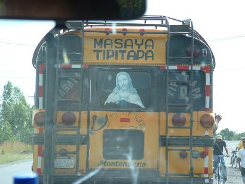 Our own car travels under the protection of Dashboard Guatemalan Jesus. Here he is leading us out of Nicaragua and into the promised land of Costa Rica. 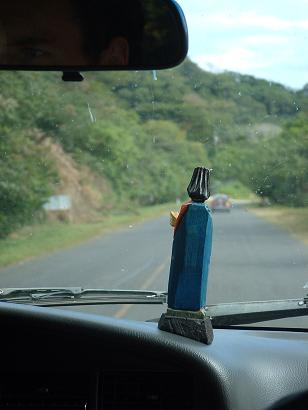 Even now on the river, on the brink of a huge hole, Scotland '04 expedition members can be heard to beseech: 'Don't fail me now, Dashboard Guatemalan Jesus!' |
| Lago Yojoa, Honduras, December 6-7. | ***************************************************************************** **************** If you are wondering what the white object in the bottom left of the picture is, well, it's Simon taking a sunrise swim in this otherwise beautiful lake. 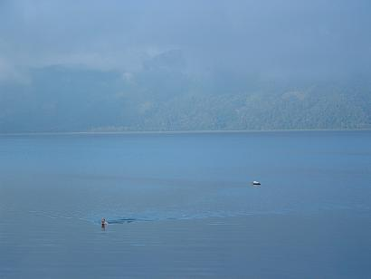 We stopped at a random hotel, as we were having more car trouble and it was getting towards dusk. We decide to go for swim and at the water's edge we meet a trio of travelling Argentinians we had previously encountered while processing our car documents at the USA-Mexico border at Tijuana. We compared Toyota 4Runner problems - we are trying to nurse ours to Costa Rica, they are aiming for home, in Buenos Aires. It was at Lake Yojoa that we encountered rain for the first time since leaving San Francisco. Torrential nighttime rain, of which we can expect much more as we head closer to the rainforest. Rain brings the rivers up, we are looking forward to fine kayaking in Costa Rica. 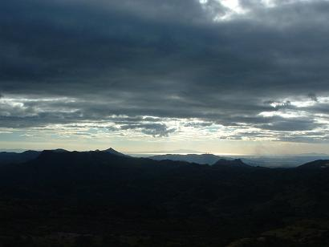 |
| Copan Ruins, Honduras, December 6. | ***************************************************************************** **************** Barely 10 km inside Honduras we visited one of the (non-kayaking) highlights of the trip - the ancient Mayan city of Copan. At the height of this civilisation, many of the cities we have seen coexisted, but Copan is now regarded as one of the most beautiful. This is the hieroglyphic staircase, on which the hieroglyphs tell the history of the city and its 17 rulers. 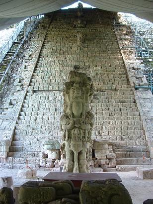 These guys were also into the blood-sacrifice ball game, but our guide told us that, contrary to what we thought, it was the winner of the game who had the honour of being sacrificed, not the loser. With that kind of attitude, how are you going to build up a decent team? Here's the Monkey God. Reminds me of a few people I know. 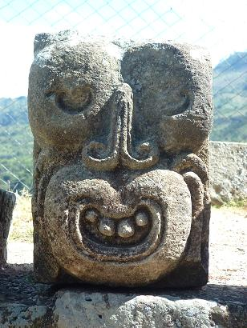 If you are wondering where you have seen this view before, well, it is the depiction on the front of the Honduran currency, the Limperia, of course. 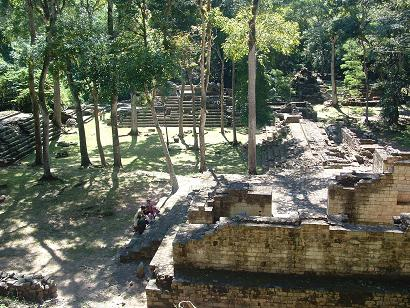 |
| Guatemala-Honduras border, December 5. | ***************************************************************************** **************** Back on the theme of coffee: the finest coffee we have tasted on our trip continues to be the house blend at Caf� Toyota. This mobile dispenser of the caffeine drip can be seen here at an enforced layover between the Guatemalan and Honduran borders. The guard on the Honduras side was on lunch, so here's Ferg enjoying a skinny half-caf, low-cream, semi-skimmed frappacino macchiata with cinnamon sprinkles, his favourite. 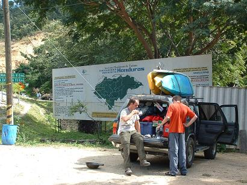 |
| Volcan Payaca, near Antigua, Guatemala, December 4. | ***************************************************************************** **************** We hiked an active volcano on one of our supposed days off. Hiking a big mountain is a traditional Scotland kayaking day off thing to do. This was a relatively simple plod, back on the gringo trail. 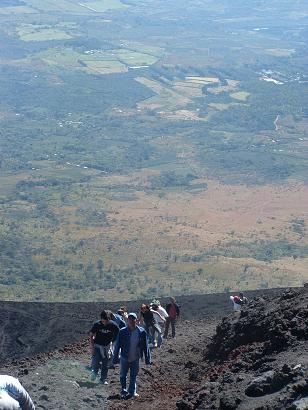 Guatemala has a bit of a robbery-with-violence problem, so the route is lined with police, which is a bit strange. At the top of the classic black cone, there was lots of steam and heat, but, sadly, no fiery inferno of doom into which we could peer fearfully. 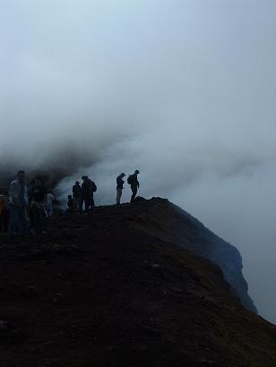 |
| Lago Atitlan, Guatemala, November 30 - December 3. | ***************************************************************************** **************** 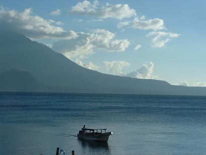 The lake is beautiful, the town of Panajachel is a tourist trap of hellish proportions. The best view of the lake is from a speeding 'lancha' whisking you across to the other side. Onboard, no-one is trying to sell you anything or shortchange you. It's like a mini-holiday. The lanchas (boats) here are of a traditional Guatemalan design - fibreglass with an outboard motor. In case you haven't seen the sun setting behind San Pedro volcano on Lago Atitlan, here it is. This one is specially for Donnie, the doyen of sunset photos. 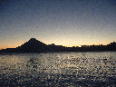 As we tried to leave Panajachel, it had one final trick up its rip-off sleeve - a steep hill designed to destroy cars. We made it a full 2 km before having to freewheel back to the mechanics. Luckily we didn't have to resort to travelling on the chicken bus. Oddly, the mechanics were the only ones not to try and do us. We were safely on our way the next day. 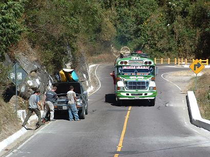 |
| Paper-Scissors-Rock is the key to decision. | ********************************************************************************************* Readers paying attention will know that the trip motto is 'Indecision is the key to flexibility,' but sometimes we have to put a stop to the flexibility and decide on courses of action. Who gets the single bed? Who gets the extra-egg omlette? Who runs the scary waterfall first? 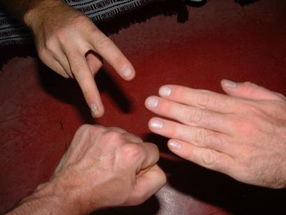 Decisions of this importance are decided by a variant of the paper-rock-sissors game. The odd one out gets the single bed, the extra-egg omlette, runs the scary waterfall first. It's a fair system, and nobody has to decide anything. |
| Leaving Mexico, November 30. | *********************************************************************************************
As the sun sets on the Mexico leg of our trip, we stop to look back. This vast country has taken us 30 days to explore, as that was the maximum allowed on our visas. Any one of us would be glad to have the opportunity to return. It's a fantastic country, but it is more akin to a continent in the style of Europe in its size and the variety of lifestyles, cultures, foods, climates, landscapes. Everything we had heard about Mexico was incorrect to a greater or lesser degree, and mostly in a good way. With a place as huge and diverse as this, any reports we might give will be wildly different from your experiences. �Viva Mexico! |
| Rio Copalita, Oaxaca, Mexico, November 27. | ********************************************************************************************* On one of our last days in Mexico we ran the Rio Copalita, which was a pleasant little affair, again without any major stories to report. Nice little playwave at the takeout. Spot the paddler competition: 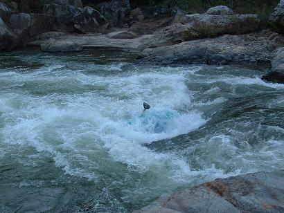 Rock splat on the Rio Copalita: 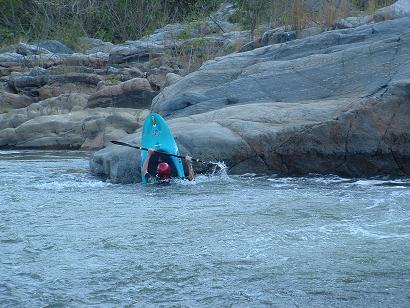 |
| Another random orange picture. | ********************************************************************************************* This was the view from our hotel room in Huatulco one morning. Honestly, this isn't a posed picture. It's a sign of something for sure. Possibly a sign that someone had parked their orange Beetle outside our window. 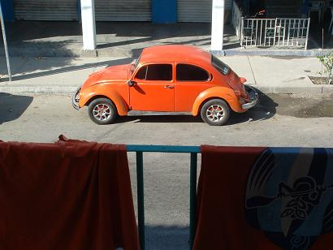 |
| Oaxaca, Mexico, November 23-26. | ********************************************************************************************* We spent some days in Oaxaca (Wa-Ha-Ka) being tourists for a while. We were under strict instructions to acquire vast quantities of chocolate, the speciality of the region. If you feel that some of this chocolate should be coming your way, all enquiries should be made to Catherine, to whom a big box of the stuff is winging its way. If she denies receiving anything in the post, but has put on lots of weight, you know what happened to your chocolate. Things of note in Oaxaca include the use of green stone in the public buildings, millions of craft shops, and two-for-the-price-of-one Pina Coladas. We ordered four of the latter, expecting to have to pay for two - we received eight and paid for four. Happy days. Here's the etno-botanical garden: 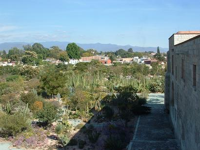 Here's the obligatory 16th-century Spanish church, with lots of gilt. 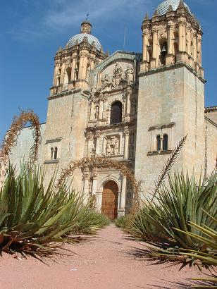 Here's what Mexico looks like from the back seat of the car. This could have been your view if you didn't prefer to stay behind and work. 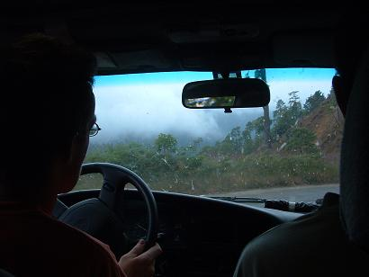 |